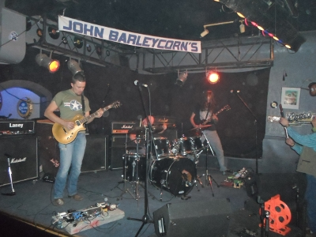
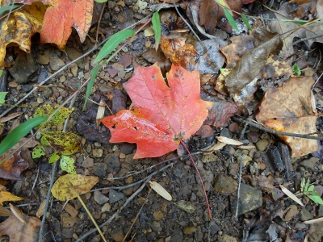
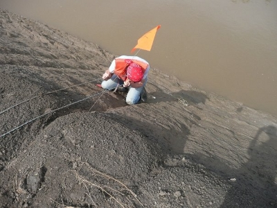

- My old band at John Barleycorn's
- Liz and I in an old mosque
- Elizabeth in Riverside
- Jasper in our creek
- Maple leaf at my Kentucky cabin
- Excavating a cutbank on the Verdigris River
- My 7-month old son (and pride and joy), Henry
- Our first family portrait
Return to top
Return to index